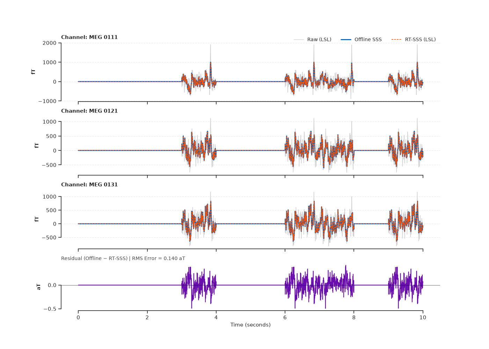
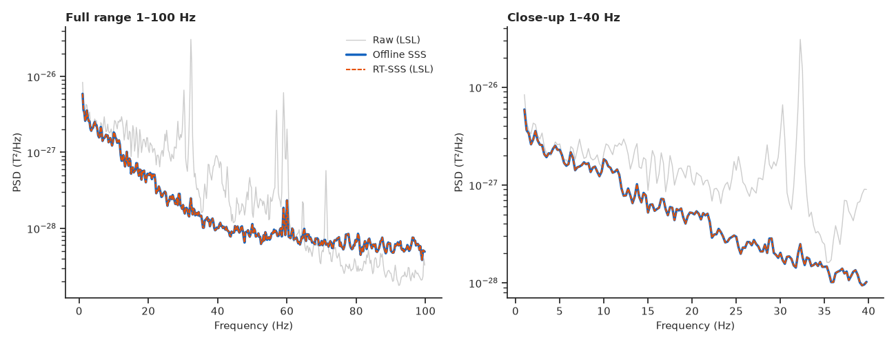
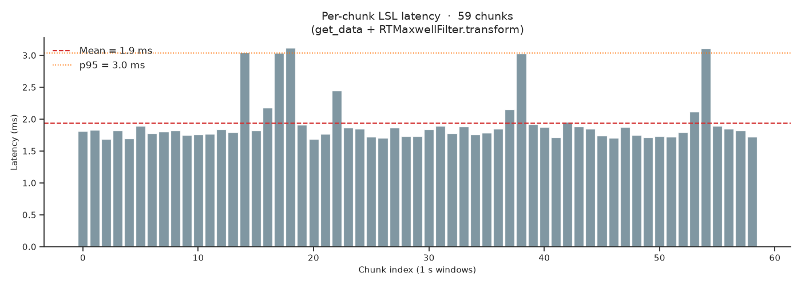

Note
Go to the end to download the full example code.
Real-time Maxwell filtering (SSS) with LSL streaming#
Signal Space Separation (SSS) is the gold-standard preprocessing step for
MEG data, suppressing external interference while preserving brain signals.
ANT’s RTMaxwellFilter pre-computes the SSS projection
operator once from sensor geometry and applies it as a single matrix multiply
per incoming chunk — zero added latency, numerically equivalent to offline
MNE processing.
This example:
Loads the MNE sample MEG dataset.
Fits
RTMaxwellFilterfrom sensor geometry (no baseline data required).Broadcasts the recording over a local LSL stream with
PlayerLSLand collects every arriving chunk while applying RT-SSS on each one.After streaming, applies offline SSS to the same collected LSL data and confirms numerical equivalence between the two methods.
Note
RT-SSS and offline SSS produce numerically identical output for basic SSS (no tSSS, no movement compensation). Both apply the same pre-computed projector \(\mathbf{P}_{\mathrm{SSS}} = \mathbf{S}_{\mathrm{in}} \mathbf{S}_{\mathrm{in}}^\dagger\).
Load MNE sample MEG data#
import os
import tempfile
import time
import matplotlib.pyplot as plt
import mne
import numpy as np
import seaborn as sns
from mne.preprocessing import maxwell_filter
from scipy.stats import pearsonr
from mne_rt.tools import RTMaxwellFilter
from mne_lsl.player import PlayerLSL
from mne_lsl.stream import StreamLSL
mne.set_log_level("WARNING")
sample_data_folder = mne.datasets.sample.data_path()
sample_data_raw_file = os.path.join(
sample_data_folder, "MEG", "sample", "sample_audvis_raw.fif"
)
raw = mne.io.read_raw_fif(sample_data_raw_file, preload=True, verbose=False)
raw.pick_types(meg=True, eeg=False, stim=False, exclude=[])
raw.crop(tmin=30.0, tmax=90.0)
raw.filter(l_freq=1.0, h_freq=100.0, verbose=False)
print(f"Raw MEG: {len(raw.ch_names)} channels, "
f"{raw.times[-1]:.1f} s, sfreq={raw.info['sfreq']:.3f} Hz")
Raw MEG: 306 channels, 60.0 s, sfreq=600.615 Hz
Fit RTMaxwellFilter#
The SSS operator depends only on sensor geometry — no recording needed.
rt_mf = RTMaxwellFilter(int_order=8, ext_order=3)
rt_mf.fit(raw.info)
print(rt_mf)
print(f"Internal moments retained: {rt_mf.n_use_in}")
RTMaxwellFilter(int_order=8, ext_order=3, mode='sss', state='fitted')
Internal moments retained: 71
Stream via PlayerLSL and apply RT-SSS in real time#
We save the recording to a temporary FIF file, broadcast it over a local
LSL stream at its native sampling rate, and apply
transform() on every arriving chunk.
Crucially, we also collect the raw (unfiltered) LSL chunks so that we can apply offline SSS to the exact same data for a fair comparison.
sfreq = raw.info["sfreq"]
chunk_samps = round(sfreq) # 1-second chunks
n_ch = len(raw.ch_names)
STREAM_NAME = "ANT_RT_SSS_demo"
SOURCE_ID = STREAM_NAME
with tempfile.NamedTemporaryFile(suffix="_raw.fif", delete=False) as _f:
_tmp_path = _f.name
raw.save(_tmp_path, overwrite=True, verbose=False)
player = PlayerLSL(_tmp_path, chunk_size=chunk_samps, name=STREAM_NAME,
source_id=SOURCE_ID, n_repeat=1)
player.start()
time.sleep(2.0) # let the outlet register and buffer settle
stream = StreamLSL(bufsize=4.0, source_id=SOURCE_ID)
stream.connect(acquisition_delay=0.005, timeout=15.0)
print(f"Connected to {STREAM_NAME} | sfreq={stream.info['sfreq']:.3f} Hz | "
f"n_ch={stream.info['nchan']}")
# Drain the initial ring-buffer zeros (populated at connect time).
# After this call n_new_samples resets to 0; everything from here is real data.
_init_drain, _ = stream.get_data()
print(f"Drained {_init_drain.shape[1]} ring-buffer init samples (zeros)")
# Accumulate raw LSL data and RT-SSS output in lists of chunks.
lsl_raw_chunks = [] # raw samples as they arrive from the stream
lsl_rt_chunks = [] # RT-SSS applied to those same samples
chunk_latencies = []
raw_buffer = np.empty((n_ch, 0), dtype=np.float64)
n_times = len(raw.times)
t_deadline = time.perf_counter() + n_times / sfreq + 30.0
total_samps = 0
while total_samps + chunk_samps <= n_times and time.perf_counter() < t_deadline:
if stream.n_new_samples > 0:
new_data, _ = stream.get_data()
raw_buffer = np.concatenate([raw_buffer, new_data], axis=1)
while raw_buffer.shape[1] >= chunk_samps:
chunk = raw_buffer[:, :chunk_samps]
raw_buffer = raw_buffer[:, chunk_samps:]
t0 = time.perf_counter()
rt_chunk = rt_mf.transform(chunk)
chunk_latencies.append((time.perf_counter() - t0) * 1000.0)
lsl_raw_chunks.append(chunk.copy())
lsl_rt_chunks.append(rt_chunk)
total_samps += chunk_samps
if raw_buffer.shape[1] < chunk_samps:
time.sleep(0.005)
stream.disconnect()
try:
player.stop()
except RuntimeError:
pass
os.unlink(_tmp_path)
n_lsl_chunks = len(lsl_raw_chunks)
print(f"Processed {n_lsl_chunks} chunks ({total_samps} samples) via LSL streaming")
chunk_latencies = np.array(chunk_latencies)
print(f"Latency — mean: {chunk_latencies.mean():.2f} ms "
f"median: {np.median(chunk_latencies):.2f} ms "
f"p95: {np.percentile(chunk_latencies, 95):.2f} ms")
# Stack chunks into contiguous arrays
data_lsl_raw = np.concatenate(lsl_raw_chunks, axis=1) # raw data received via LSL
data_rt = np.concatenate(lsl_rt_chunks, axis=1) # RT-SSS of that same data
Connected to ANT_RT_SSS_demo | sfreq=600.615 Hz | n_ch=306
Drained 2403 ring-buffer init samples (zeros)
Processed 59 chunks (35459 samples) via LSL streaming
Latency — mean: 1.93 ms median: 1.82 ms p95: 3.04 ms
Apply offline SSS to the collected LSL data#
We reconstruct an MNE Raw object from the LSL-collected samples and apply offline SSS. This guarantees that both methods operate on exactly the same input data — eliminating any temporal misalignment.
raw_lsl = mne.io.RawArray(data_lsl_raw, raw.info.copy(), verbose=False)
raw_lsl_sss = maxwell_filter(raw_lsl, origin="auto", int_order=8, ext_order=3,
verbose=False)
data_offline = raw_lsl_sss.get_data()
print(f"Offline SSS applied to {data_offline.shape[1]} LSL samples")
Offline SSS applied to 35459 LSL samples
Numerical equivalence check#
mag_picks = mne.pick_types(raw.info, meg="mag", exclude=[])
grad_picks = mne.pick_types(raw.info, meg="grad", exclude=[])
all_meg_picks = mne.pick_types(raw.info, meg=True, exclude=[])
residuals = data_offline - data_rt
residual_rms_fT = np.sqrt(np.mean(residuals[mag_picks] ** 2)) * 1e15
signal_rms_fT = np.sqrt(np.mean(data_offline[mag_picks] ** 2)) * 1e15
print(f"Residual RMS (mag): {residual_rms_fT:.6f} fT "
f"({residual_rms_fT / signal_rms_fT * 100:.2e} % of signal)")
corr_all = np.array(
[pearsonr(data_offline[ch], data_rt[ch])[0]
for ch in all_meg_picks]
)
ch_types = np.array(
["mag" if ch in mag_picks else "grad" for ch in all_meg_picks]
)
print(f"Mean Pearson r (offline vs RT-SSS): {corr_all.mean():.6f}")
Residual RMS (mag): 0.000153 fT (7.74e-05 % of signal)
Mean Pearson r (offline vs RT-SSS): 1.000000
Figure 1 — Time-series comparison#
sns.set_theme(style="ticks", font_scale=1.0)
target_names = ["MEG 0111", "MEG 0121", "MEG 0131"]
plot_chs = [raw.ch_names.index(n) for n in target_names if n in raw.ch_names]
if len(plot_chs) < 3:
plot_chs = list(mag_picks[:3])
t_plot = np.arange(data_lsl_raw.shape[1]) / sfreq
t_mask = t_plot <= 10.0
scale = 1e15
colors = {"raw": "#D1D1D1", "offline": "#005EB8", "rt": "#FF4F00", "residual": "#6A0DAD"}
fig1, axes = plt.subplots(
4, 1, figsize=(14, 10), sharex=True,
gridspec_kw={"height_ratios": [1, 1, 1, 0.8], "hspace": 0.25},
)
for i, (ax, ch_idx) in enumerate(zip(axes[:3], plot_chs)):
ch_name = raw.ch_names[ch_idx]
ax.plot(t_plot[t_mask], data_lsl_raw[ch_idx][t_mask] * scale,
color=colors["raw"], lw=1.0, label="Raw (LSL)", zorder=1)
ax.plot(t_plot[t_mask], data_offline[ch_idx][t_mask] * scale,
color=colors["offline"], lw=2.0, label="Offline SSS", zorder=3)
ax.plot(t_plot[t_mask], data_rt[ch_idx][t_mask] * scale,
color=colors["rt"], lw=1.2, ls=(0, (3, 1.5)), label="RT-SSS (LSL)", zorder=4)
ax.set_ylabel("fT", fontweight="bold", fontsize=10)
ax.set_title(f"Channel: {ch_name}", fontsize=11, loc="left", fontweight="semibold")
sns.despine(ax=ax, trim=True)
ax.grid(axis="y", linestyle="--", alpha=0.4)
if i == 0:
ax.legend(bbox_to_anchor=(1.0, 1.15), loc="upper right", ncol=3,
frameon=False, fontsize=10)
res_ch = plot_chs[0]
residual_plot = residuals[res_ch][t_mask] * 1e18
ax_res = axes[3]
ax_res.fill_between(t_plot[t_mask], residual_plot, color=colors["residual"], alpha=0.2)
ax_res.plot(t_plot[t_mask], residual_plot, color=colors["residual"], lw=1.2)
ax_res.axhline(0, color="black", lw=0.8, alpha=0.6)
ax_res.set_ylabel("aT", fontweight="bold", fontsize=10)
ax_res.set_xlabel("Time (seconds)", fontsize=11)
rms_text = f"RMS Error = {np.sqrt(np.mean(residuals[res_ch]**2))*1e18:.3f} aT"
ax_res.set_title(f"Residual (Offline − RT-SSS) | {rms_text}",
fontsize=10, loc="left", color="#444444")
sns.despine(ax=ax_res, trim=True)
fig1.tight_layout()

/home/runner/work/mne-rt/mne-rt/examples/ex_maxwell_realtime.py:242: UserWarning: This figure includes Axes that are not compatible with tight_layout, so results might be incorrect.
fig1.tight_layout()
Figure 2 — Power spectral density#
from mne.time_frequency import psd_array_welch
psd_kwargs = dict(sfreq=sfreq, n_fft=int(4 * sfreq),
n_overlap=int(2 * sfreq), verbose=False)
def _mean_psd(data, picks, **kw):
psds, freqs = psd_array_welch(data[picks], **kw)
return freqs, psds.mean(axis=0)
f_raw, pxx_raw = _mean_psd(data_lsl_raw, mag_picks, **psd_kwargs)
f_off, pxx_offline = _mean_psd(data_offline, mag_picks, **psd_kwargs)
f_rt, pxx_rt = _mean_psd(data_rt, mag_picks, **psd_kwargs)
fig2, (ax_full, ax_zoom) = plt.subplots(1, 2, figsize=(13, 5))
for ax, flim, title in [
(ax_full, (1, 100), "Full range 1–100 Hz"),
(ax_zoom, (1, 40), "Close-up 1–40 Hz"),
]:
mask = (f_raw >= flim[0]) & (f_raw <= flim[1])
ax.semilogy(f_raw[mask], pxx_raw[mask], color="#CCCCCC", lw=1.0, label="Raw (LSL)")
ax.semilogy(f_off[mask], pxx_offline[mask], color="#1565C0", lw=2.5, label="Offline SSS")
ax.semilogy(f_rt[mask], pxx_rt[mask], color="#E65100", lw=1.5,
ls=(0, (3, 1)), label="RT-SSS (LSL)")
ax.set_xlabel("Frequency (Hz)", fontsize=11)
ax.set_ylabel("PSD (T²/Hz)", fontsize=11)
ax.set_title(title, loc="left", fontsize=12, fontweight="semibold")
sns.despine(ax=ax)
if ax == ax_full:
ax.legend(fontsize=10, frameon=False, loc="upper right")
fig2.tight_layout()

findfont: Failed to find font weight semibold, now using 700.
Figure 3 — LSL latency#
fig3, ax_lat = plt.subplots(1, 1, figsize=(14, 5))
ax_lat.bar(np.arange(len(chunk_latencies)), chunk_latencies,
color="#607D8B", alpha=0.8, width=0.85)
ax_lat.axhline(chunk_latencies.mean(), color="#D32F2F", lw=1.5, ls="--",
label=f"Mean = {chunk_latencies.mean():.1f} ms")
ax_lat.axhline(np.percentile(chunk_latencies, 95), color="#FF6F00", lw=1.2, ls=":",
label=f"p95 = {np.percentile(chunk_latencies, 95):.1f} ms")
ax_lat.set_xlabel("Chunk index (1 s windows)", fontsize=11)
ax_lat.set_ylabel("Latency (ms)", fontsize=11)
ax_lat.set_title(
f"Per-chunk LSL latency · {len(chunk_latencies)} chunks\n"
f"(get_data + RTMaxwellFilter.transform)",
fontsize=14,
)
ax_lat.legend(fontsize=12, frameon=False)
ax_lat.spines[["top", "right"]].set_visible(False)
fig3.tight_layout()

Total running time of the script: (0 minutes 22.145 seconds)